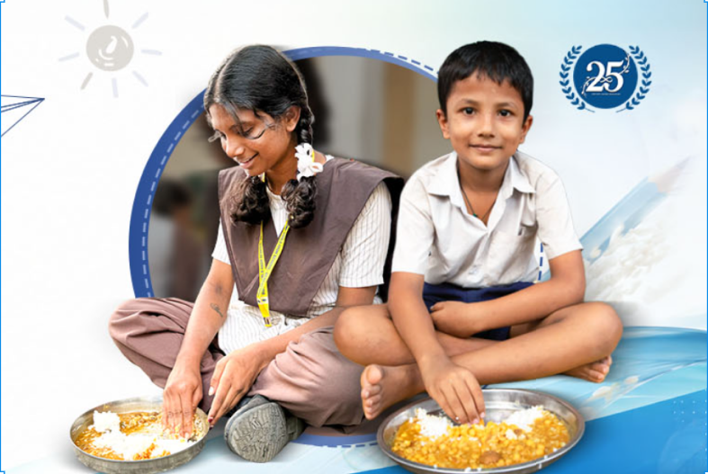

I am a Food Donor
Restaurants, caterers, hotels, canteens and event organizers can list their healthy surplus food for collection by nearby NGOs.
Register as Donor →We bridge the gap. Our platform connects edible surplus food from restaurants, hotels and canteens directly with nearby NGOs ready to distribute it to people in need.

How would you like to contribute to the FoodRescue network today?
Restaurants, caterers, hotels, canteens and event organizers can list their healthy surplus food for collection by nearby NGOs.
Register as Donor →Food banks, shelters and community organizations can find available surplus food and arrange collection for people in need.
Register as NGO →Our direct food recovery process helps build zero-waste communities.
Create an account as a food donor or NGO partner.
Donors add food details, quantity and pickup information.
NGOs find suitable available food donations.
Food is collected and distributed to people who need it.
Working together for a better and less wasteful world.
Helping redirect surplus food to people in need.
Supporting community organizations and food banks.
Encouraging food businesses to reduce waste.